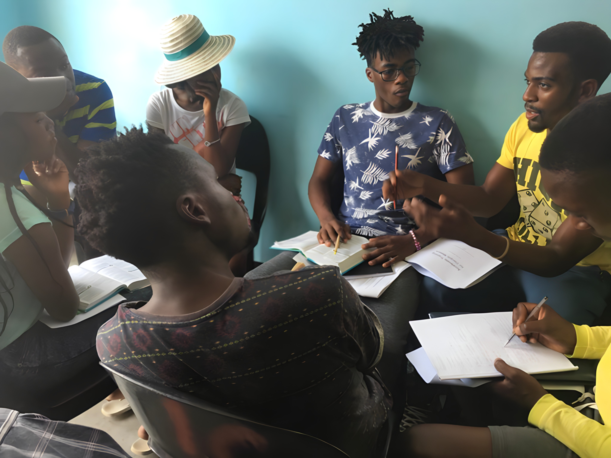

A local leader with deep roots and a vision for their city.
Two Four Eight develops the kind of leaders who multiply disciples, form faith communities, and raise up the next generation, without depending on us to keep going.
Seven years and a model that works. In 2019, we began investing in the first leaders across South African townships. Today the movement is self-led and multiplying on its own.
These numbers represent leaders, not programs: locally-owned movements built to outlast our involvement.
We'd welcome 30 minutes to share what we're seeing in cities and hear what matters to you.
We find local leaders already positioned to start movements in their cities. We invest in them. We coach them. And when the movement no longer needs us, we step back.
We don't move fast and hope for the best. We go deep, acting as catalyst and coach, igniting what couldn't start without us, then stepping back as local ownership takes root.
Every leader we invest in receives three things:
An experienced practitioner who walks alongside the leader for the long haul, coaching through real challenges, on the ground, in real time.
Cohorts, cross-city learning, and exposure to other movement leaders. The kind of community that stretches vision and sharpens the work over time.
A structured coaching journey, not academic curriculum, but practical tools covering team health, mission clarity, outreach, and leader multiplication. Built for depth that scales.


We track five signs that tell us whether a leader, team, and movement are alive, healthy, and built to outlast us.
A local leader with deep roots and a vision for their city.

Disciples make disciples through their own networks.

Lives change. Communities begin to heal.

Simple faith communities form in homes and workplaces.

Leaders develop the next generation beyond their own city.
See what movement leaders and partners say about working with Two Four Eight.
"Two Four Eight excels at coaching teams through hands-on learning, real-life application, and problem-solving. Their learning communities help disciple-makers grow, no matter where they are on the journey."

Sam
Hungary
"Over several years, Two Four Eight has encouraged me with honest coaching, practical tools, and a deep love for Jesus. They celebrate wins, share their own lessons, and stick with leaders through the hard times."

Ryan
Scotland
"Two Four Eight provides excellent content and builds simple processes that build real community. Their resources create capacity for continuous learning. We value their humility and focus on authentic relationships."

Scott
Asia
"We work in South Africa's townships, vibrant yet violent, full of character yet challenging. Two Four Eight have been faithful friends and partners, always there when needed. Together, we're learning daily how to introduce Jesus more effectively to our people."

Loyiso
South Africa
We keep overhead low and coaching capacity high. Our core co-ordinating team supports Movement Guides and Leaders worldwide.


We'd welcome 30 minutes to share what we're seeing in cities and hear what matters to you.
You are not funding a program. You are funding a multiplier: a system that outlasts and outgrows our involvement.
Every investment targets a specific leader at the point of greatest impact. Our expertise is knowing the right catalyst for the right moment to unlock momentum.
You're funding a multiplier. A system that outlasts and outgrows our involvement. Addition reaches hundreds. Multiplication reaches cities.
We measure five dimensions across every city, every quarter. AI-informed evaluation means you always know what your investment is strengthening and why.
Our role as catalyst ends when local leaders no longer need us. The measure of success is movements that outlast our involvement.


Funds the development of 8-15 Movement Leaders across a region.
Funds the full coaching infrastructure for one early-stage city.
Funds a Venture: launching a new local organisation with capacity to reach multiple cities.
We are currently investing in leaders at different points of the movement journey. Different cities at different thresholds.
.jpg)

.jpg)

We'd welcome 30 minutes to share what we're seeing in cities and hear what matters to you.